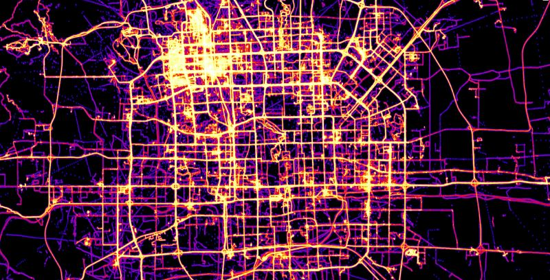

About GeoWave
Geospatial indexing and analysis of a sorted key-value datastore

Origin
GeoWave was developed at the National Geospatial-Intelligence Agency (NGA)

Apache Licensed
We are releasing this software under the Apache 2.0 license to increase the impact of government investments by providing developers with the opportunity to take things in new directions.